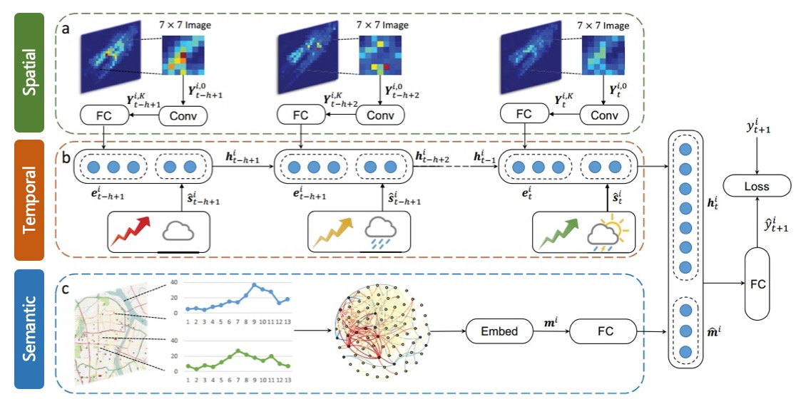
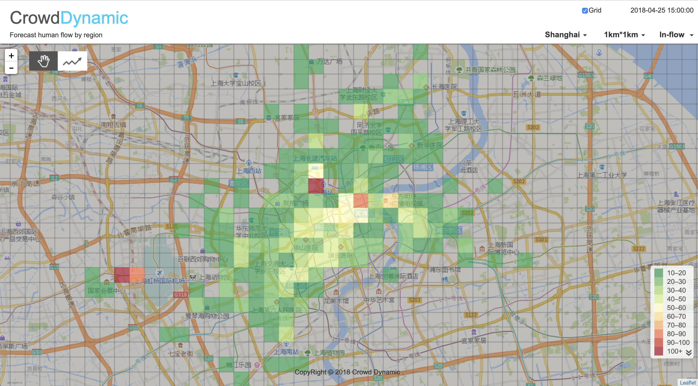
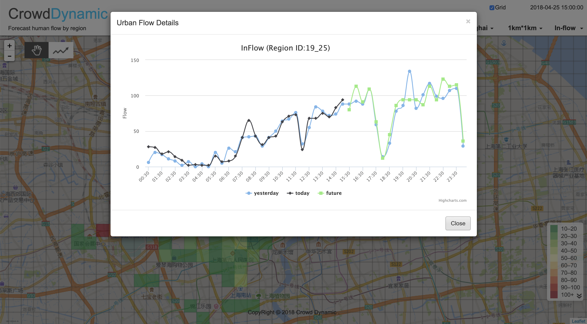
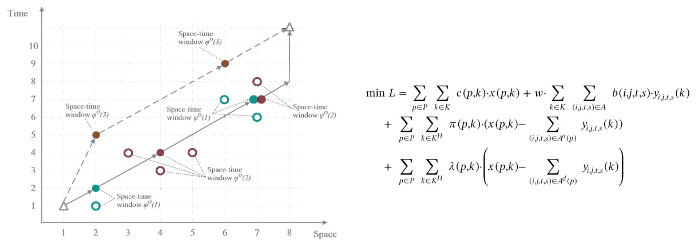
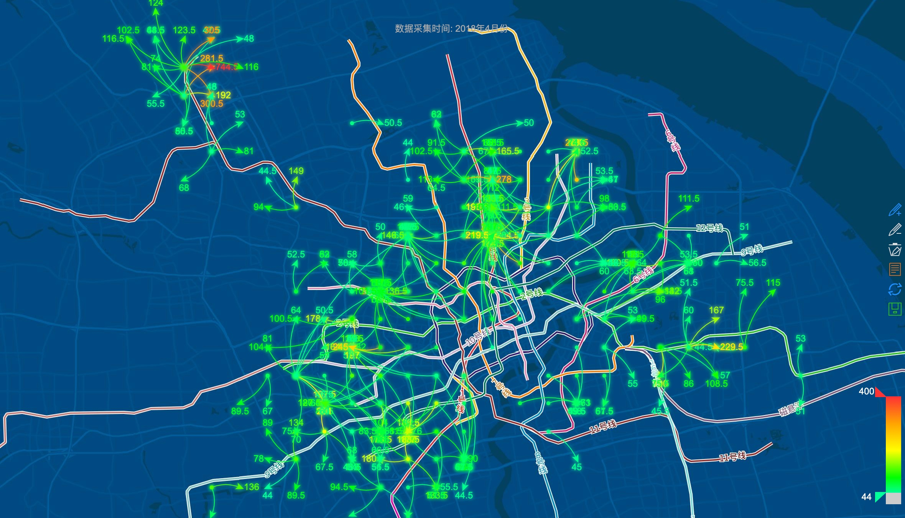

Crowd Dynamic
2018-04
Background
In this project, we designed a large scale crowd flow forecasting model, with an evacuation strategy which could take advantage of the urban transit system effectively. I cooperated with my partner Fuwen Deng. I was mainly responsible for data crawling and modeling. I designed the forecasting model and developed a set of visualization web-apps to present our results.
We collected large amount of multi-source data, for example geo-tagged Weibo (the Chinese Twitter) check-ins, taxi trajectory and metro card records (which is public dataset provided by Shanghai Open Data Apps) , and OSM road network data.
After pre-process and data fusion, we analyze the features of crowd and build a model to predict crowd flow dynamically. We also design an effective strategy to evacuate crowd rapidly based on urban transit system.
Forecast
We splitted Shanghai into 1km * 1km size grids, analyzed taxi OD routes and check-in data to summarize the inflow and outflow of each grids, then use those data to train a spatial-temporal model.
We proposed a deep-learning-based approach, which combined the spatial, temporal and semantic properties of crowd traffic, to collectively forecast the inflow and outflow of crowds in every region of a city.

We also developed a web-app to show the predicted crowd amount of each grid, this web-app can also visualize the crowd flow trend of the entire city.

Evacuate
For evacuating, we use a linear programming method to generate evacuating strategy, which utilize urban transit network to transport the crowd flow.


Future Works
- It’s hard to visualize the evacuating strategy and evaluate how different strategies affect the efficiency of evacuation. So we are planning to design another tool to simulate the evacuation effect and visualize the human mobility.